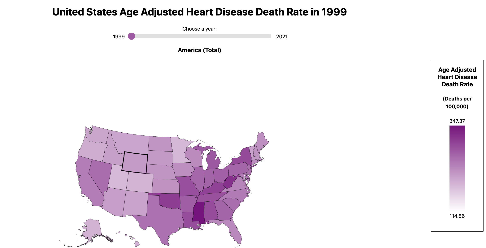
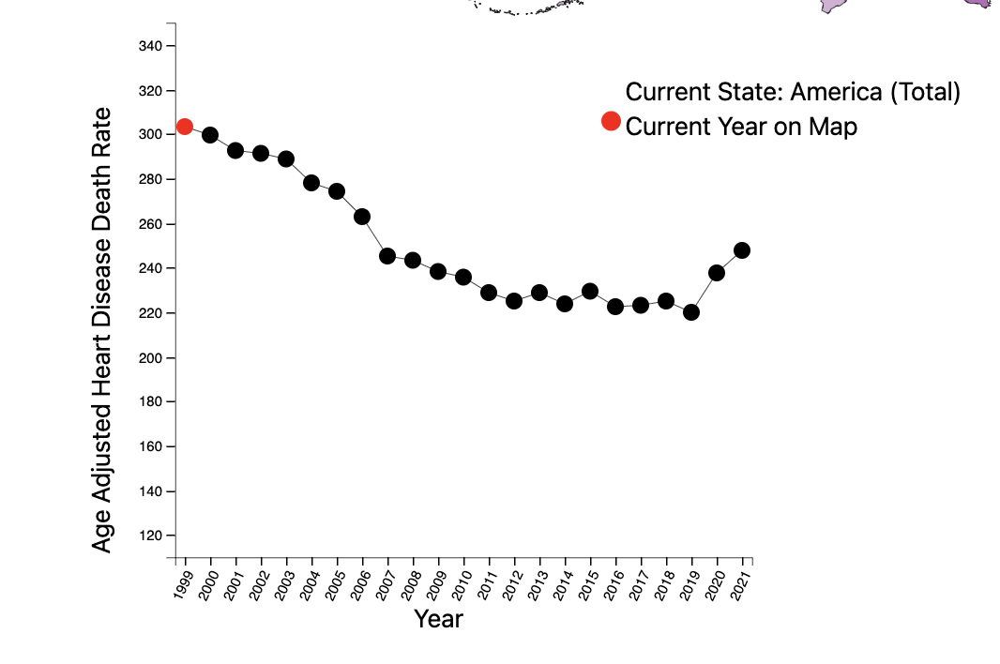
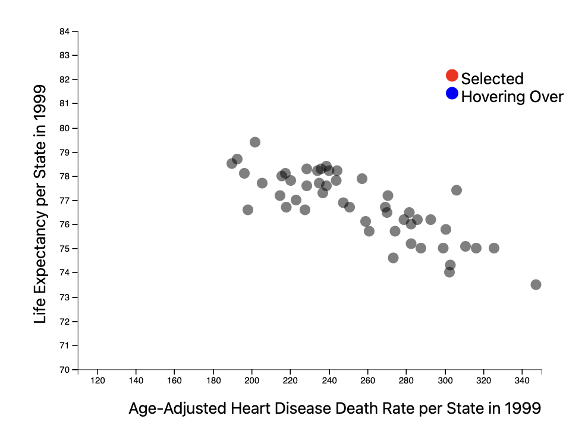
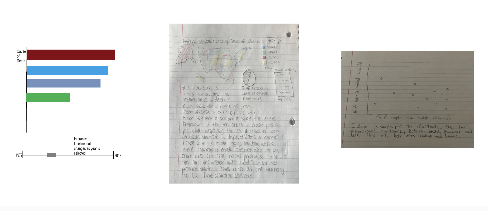

Demo Video
Here is a link to the slides.
Visualization explanation
  In the view, the user sees three visualizations at once: a map of the United States, a line chart, and a scatterplot. The map is our primary visualization and is the first that the user should interact with. It encodes the age adjusted heart disease death rate per state from 1999-2021, and the user can dynamically update which year is shown using the slider bar above. The user can also interact with the visualization by hovering over and clicking on a specific state.
The linechart encodes one state’s heart disease death rate overtime from 1999-2021. When the user clicks on a state, the line chart will update to display its data as a line chart. Each year is marked with a point, and the color red encodes the one datapoint that is currently displayed on the map.
The scatterplot encodes each state’s heart disease death rate to their life expectancy for a given year. The year updates as the user drags the scrollbar above the map. The marks are points, and each point represents one state. The user can hover over each point for details on demand as well as brush over multiple points to highlight those states on the map. The scatterplot aims to derive new data by examining the relationship between life expectancy and heart disease death rate.
Data Analysis
Originally, our group was planning to explore a dataset on the ten leading causes of death by state, from 1999-2017. Our intention was to examine trends both overtime and geographically until 2021 to gain insights on the impact of COVID-19. We also wanted to relate this to the percentage of state residents with access to affordable healthcare through interaction with an additional visualization. Ultimately we were unable to find state data for ten leading causes of death from 2018 onwards.
During peer review, we were also given consistent feedback that narrowing our focus would make our visualization more effective. In order to accommodate missing data and our feedback, we pivoted to focus on only heart disease, the leading cause of death across the United States. This helps us ensure that our visualizations all compliment one another and still fulfills our primary domain task, “What do you consider the most prominent healthcare issues in the United States? Is that different now versus 50 years ago?”
We are using three datasets for our final visualization. Our primary data set contains the Age Adjusted Heart Disease Death Rate per state from 1999-2021 in JSON format, obtained by the CDC. This is measured by the number of deaths per 100,000 total population, and it is adjusted for differences in age-distribution and population size. Our second data set contains the life expectancy per state in 1999-2021 except for 2017. We were unable to find the data per state for 2017. To resolve this problem as best as we could, we found the national average life expectancy for all of the United States and used that for each state. We had also planned to use one last dataset containing the COVID-19 Age Adjusted Death Rate per state from 2020-2022, also obtained from the CDC. We did not have enough time to integrate this dataset into our final visualization. For each data set, we manipulated the data so that each year is an object that has key-value pairs connecting each state to its respective datapoint.
Task Analysis
Based on our interview responses, we identified six potential domain tasks. Our final visualization successfully answers our #1 ranked domain task, “What do you consider the most prominent healthcare issues in the United States? Is that different now versus 50 years ago?” As a group, we decided that heart disease should be considered one of the most prominent healthcare issues in the United States as it has been the leading cause of death for decades. The low-level tasks associated with this domain task are Identify and Compare, which we fulfill through user interactivity. The user can easily compare states across time as well as different regions of the United States to one another. At the middle level, our visualization satisfies the Lookup task where users already know both what they’re looking for and where it is- in other words, both the target and location are known. Users can look up the data for a specific state at a specific year through the drop down menu and details on demand in our map. On a high-level, the purpose of this domain task is to Derive and Discover. New data is derived through our scatter plot which plots the relationship between life expectancy and Heart Disease Adjusted Death Rate. Additionally, the user can discover insight about the data by hovering over marks and using interaction to view the data through different visual encodings. In this way, users can use our visualization to find new knowledge that was not previously known to them. Our visualization is meant to be easily digestible to a wide range of users with a variety of medical experience.
If given more time, we would have liked to further explore COVID-19 and its effect on public health with more depth. This would have helped us begin to answer our 5th ranked domain task, “Has COVID-19 generated outliers in public health?” in specific relation to heart disease.
Design Process

Since our data involves both time and geographic location, we decided to use a map as our primary visual encoding. Maps are particularly engaging to users and the most effective way to communicate data that is categorized by state. Since we are encoding age adjusted heart disease death rate, a quantitative variable over the map, we chose to use a lightness map. We chose to use this because lightness is an effective way to encode quantitative variables, whereas rainbow color maps are not. Originally our color map was red, but we changed it to purple because differences in purple are easier to perceive to the human eye, and it is more friendly to all forms of colorblindness. We included a legend that shows the minimum and maximum heart disease death rate value next to the relevant color value, which we found necessary after usability testing. We also added a scrolling bar at the top of our map to simply and effectively navigate from year to year. Though this was not intended, an added bonus of the scroll bar is when dragged from beginning to end the user can see the color saturation changes on the map which provides a comprehensive overview of how the number of heart disease related deaths changed overtime, almost as an animation. Beneath our map, we created a line chart and a scatter plot to gather new insight on our data in a different perspective. All three of our visualizations are linked to one another.
Our line chart plots a given state’s age adjusted-heart disease death rate over the entire recorded time period (1999-2021). When the user clicks on a state, the line chart updates to display that state’s relevant data. Line charts are particularly useful when encoding when working with temporal data, and the position attribute is ranked most effective. Our scatter plot shows the relationship between heart disease death rate and life expectancy per state for each year recorded. Our marks are points, and each point represents one of the 50 states. The points are semi-transparent to prevent occlusion. We include details on demand so that the user can highlight a point to see which state it is, and its respective values. The scatter plot satisfies our desire to derive new data, a goal of ours in our task analysis. It also allows the user to browse and explore the data as there is no location or target known. We use red, the most effective popout color, to link hovering and clicking on a specific state to its respective point on the plot.
Our intention is for the user to first explore our data visualization using the map, and then dive deeper into their particular areas of interest through exploring different line charts and scatter plot encodings. By hovering over the marks of each visualization, clicking on the map, and dragging the scroll bar, the user has control over what year and what state is focused on in the current visualization.
Conclusion
Our group was able to successfully create three different visualizations that use both geographic and temporal data, all linked to one another. We synthesized our own JSON data sets by manipulating multiple data sets from reliable sources such as the CDC. We implemented details on demand for the marks of all three visualizations, giving the user the necessary contextual information to understand our data in full. If given the opportunity in the future, our group intends to look further into COVID-19 data and find a way to integrate it into our current visualization. A potential way to measure the effectiveness of our visualization in the future is to observe our target users after deployment in a field study. An area that we could have improved upon was ensuring that we were not missing any data before finalizing our design idea. We had to heavily revise our final visualization in comparison to our formal sketch on Figma. Also, our code could have been more organized and clear with the addition of comments.
Acknowledgments
List here where any code, packages/libraries, text, images, designs, etc. that you leverage come from.
- D3: Data-Driven Documents by Mike Bostock.
- Pure CSS responsive "Fork me on GitHub" ribbon by Chris Heilmann.
- COSI 116A F24 Assignment 4—Brushing and Linking in D3
- ChatGPT as coding resource